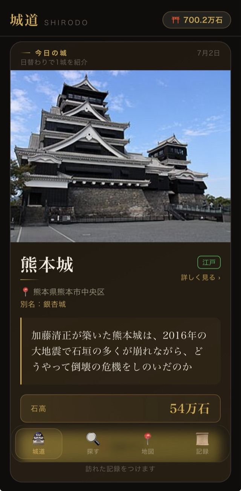
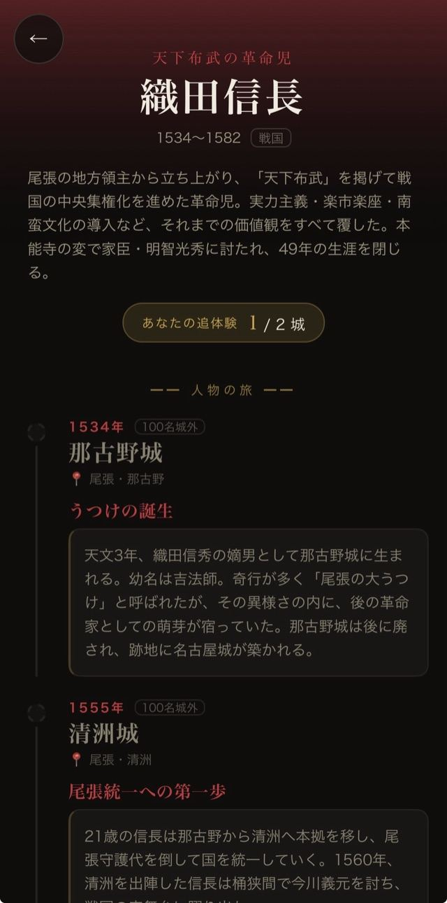
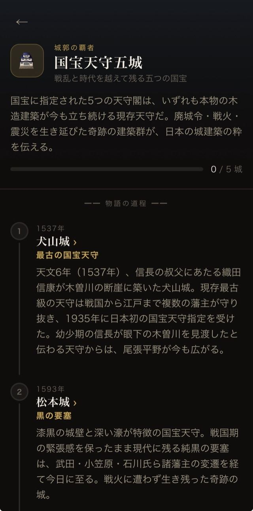
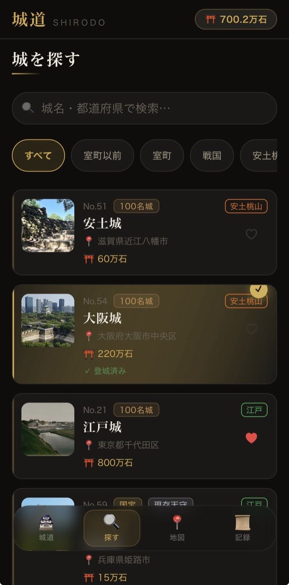
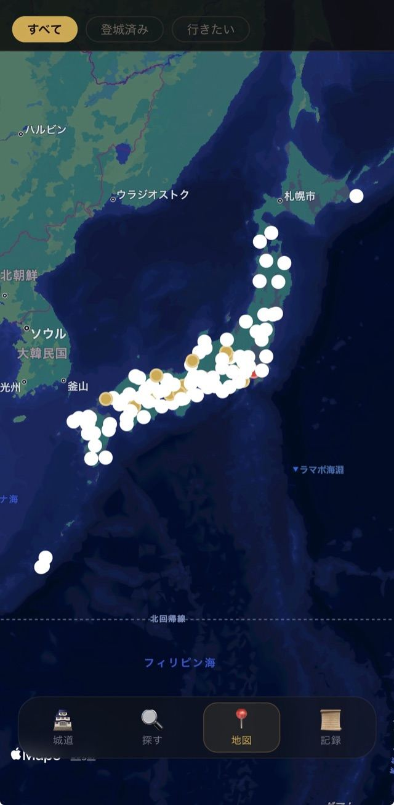
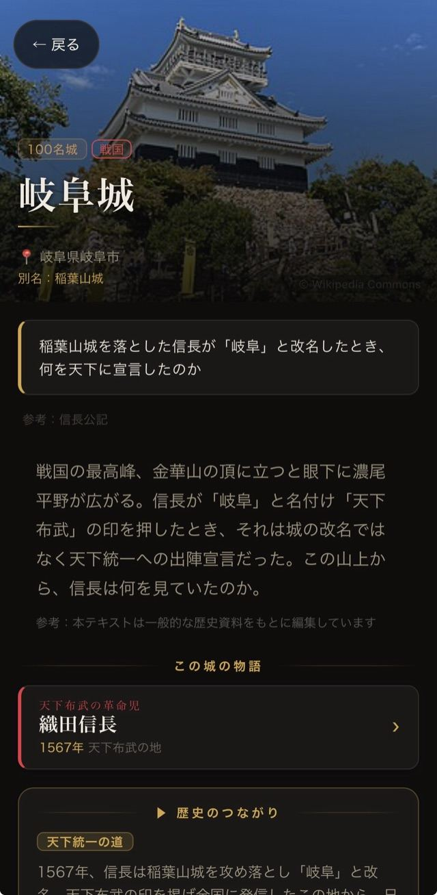

戦のない時代に、なぜこれほど
黒く重く威圧的な天守が生まれたのか。
実戦仕様の黒い大天守に、のちに朱塗りの「月見櫓」が増築された。戦う城と、月を愛でる城が一棟に同居しています。
城は、文脈を知ってから
訪ねると面白い。
毎朝ひとつの"問い"をきっかけに城を訪ね、
登城を記録していく。シンプルな城活アプリ。
石垣を見て、「なぜここに？」と思ったことはありませんか。
そこに生きた人々が、何を恐れ、何を守ろうとしていたのか——
時代の空気、人々の熱量、思いを追体験していくと、目の前の景色にゆっくり感情が重なってくる。
SHIRODOは、その"文脈"を毎日ひとつの「問い」にして届ける、城活のためのアプリです。
歴史にくわしくなくて大丈夫。ふと考えたくなる切り口から、その城の時代へ入っていきます。
戦のない時代に、なぜこれほど
黒く重く威圧的な天守が生まれたのか。
実戦仕様の黒い大天守に、のちに朱塗りの「月見櫓」が増築された。戦う城と、月を愛でる城が一棟に同居しています。
1945年の大空襲で市街地が焦土と化すなか、
この城だけが白く輝き続けたのはなぜか。
偶然か、設計か、それとも守り続けた人々の意志か。白漆喰の壁が照り返す光の理由を辿ります。
2016年の地震で多くの石垣が崩れながら、
なぜ櫓は崩れ落ちずに踏みとどまったのか。
隅の石だけで建ち続けた「奇跡の一本石垣」。加藤清正が築いた武者返しの石垣に隠された設計を読み解きます。
左右にスワイプしてご覧ください。信長や家康など、実在の人物の足跡をたどることも、
テーマ別の"物語"を集めていくこともできます。






無料でダウンロード。アカウント登録も、広告も、トラッキングもありません。すぐ始められます。
毎朝ひとつ、城にまつわる問いが届きます。時代の熱量をたどる短い物語つき。
訪れた城を登城として記録。石高が積み上がり、称号が上がっていきます。地図で自分の旅を俯瞰する楽しさも。
登った城の石高が積み上がるほど、あなたの称号が上がっていきます。
きっかけは、あるラジオ・podcastでした。私自身そのリスナーで、歴史を"文脈"から面白く掘り下げていく番組づくりに、ずっと感銘を受けてきました。聴くたびに、「その人物や土地の文脈を知ると、見え方が変わる」と実感していて——大好きな城めぐりという形で、それを体験にできないかと考えて城道（しろどう）を作り始めました。
城は情報がたくさんある場所です。石垣の積み方、櫓の配置、城下の営み。でも、事実の羅列だけを追いかけると、なんだかテストの答え合わせのようになってしまう。
そこで、毎朝ひとつだけ「問い」を届けることにしました。問いをきっかけに時代を想像し、実際に城へ行き、自分なりの答えを持ち帰る——その往復から、少しずつ人文知が積み上がっていく。
城道は、城を"訪れる"から、"読む"へ変えていくためのアプリです。同じビジョンに共感してくださる方と、一緒に日本を旅していけたら嬉しいです。
今日の問いは、いま届いています。
無料 · 広告なし · iOS 16以上